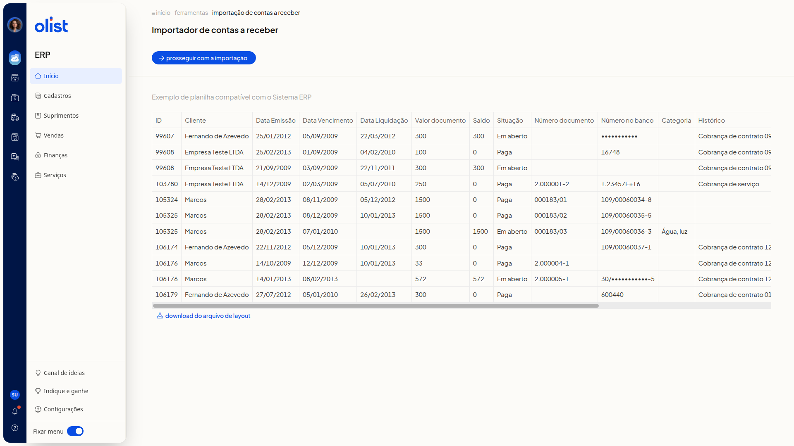

Como importar lançamentos de contas a receber de uma planilha
Descrição
No ERP da Olist, você importa lançamentos de contas a receber a partir de uma planilha. O modelo do arquivo fica disponível para download na tela de importação.
Você encontra a importação em Finanças > Contas a Receber, em Mais ações > Importar lançamentos de uma planilha.
Pré-requisitos
- Acesso ao menu Finanças no ERP.
- Permissão de Contas a receber para acessar a tela.
- Permissão de importação de registros e permissão para incluir e editar em Contas a receber.
- Modelo baixado em Download do arquivo de layout, na tela de importação.
Instruções
- Acesse Finanças > Contas a Receber.
- Clique em Mais ações.

- Clique em Importar lançamentos de uma planilha.

- Clique em Download do arquivo de layout para obter o modelo. A planilha de exemplo mostra estas colunas:
- ID
- Cliente
- Data Emissão
- Data Vencimento
- Data Liquidação
- Valor documento
- Saldo
- Situação
- Número documento
- Número no banco
- Categoria
- Histórico
- Selecione o arquivo no seletor de arquivo.
- Clique em Prosseguir com a importação.
Links relacionados
Se precisar de ajuda para concluir a importação, fale com o suporte.